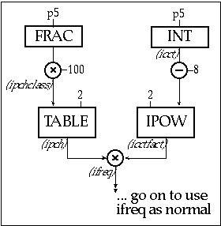
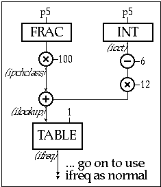
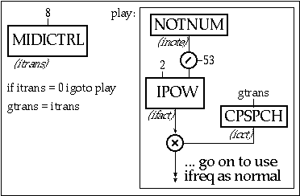
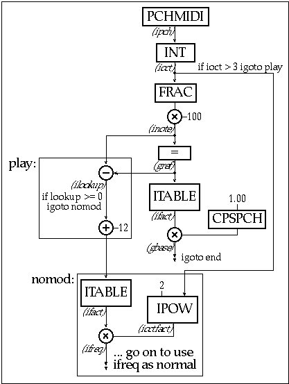

Even in the recent past, making
music with alternate tuning systems was not for the faint of heart.
The imposition of the twelve-tone equal temperament standard in
the West meant that alternate-tuning pioneers like Harry Partch
had to tune or even build their own instruments. Nevertheless,
in recognition of the small but growing group of alternate-tuning
musicians, some manufacturers added re-tuning features to early
MIDI instruments. While this capability was a great leap forward
for those of us with limited carpentry skills, MIDI instruments
still had significant tuning limitations.
Only in a software-based system such as Csound is the full palette of possible pitch systems available to the composer. Csound not only removes the practical necessity for compromises inherent in most tuning systems, it also allows the tuning explorer to chart new potentials previously unavailable for practical music-making. This chapter will provide an introduction to the techniques used for a variety of types of alternate tunings in Csound.
Pitch Specification and Resolution in Csound
Csound provides three different methods for pitch specification: cps (frequency in Hertz, required by most functions), pch (a twelve-tone equal temperament specification with microtones in cents) and oct (a specification with decimal divisions of the octave). The pch specification is most commonly used in score files to specify pitches. The number to the left of the decimal point represents the octave, with 8 being the octave beginning on middle C. The two digits immediately to the right of the decimal point represent the pitch class, that is, the key number within the octave for a standard piano keyboard, beginning with C=00.
Thus 8.00 is middle C, 8.01 is C# or Db, and so on, up to 8.11 which is B. 8.12 is equivalent to 9.00, or C of the next octave. The next two decimal points represent cents, that is, hundredths of equally-tempered semitones. Thus 8.0050 is a pitch halfway between C and C#, or 50 cents (a quarter-tone) sharp of C. In the oct format, the numbers to the left of the decimal point, again, represent the octave, but the numbers to the right of the decimal point represent decimal divisions of the octave. Therefore, 8.06 (F#) in pch notation is equivalent to 8.50 (halfway between the C of octave 8 and the C of octave 9) in oct notation.
Csound provides six functions to convert between these specifications: cpspch (convert from pch to cps in twelve-tone equal temperament), cpsoct (convert from oct to cps), pchoct (convert from oct to pch), pchcps (convert from cps to pch),octcps (convert from cps to oct), and octpch (convert from pch to oct).
While pitches in a score may be specified directly with cps, few musicians think in such terms. For composers who use twelve-tone equal temperament (12TET), or who know their pitches relationship to 12TET, pch notation can be useful. For example, a quarter-tone scale could be rendered: 8.000, 8.005, 8.010, 8.015, 8.020, 8.025, and so on. However, many composers in alternate tunings have no desire to express themselves in relation to the 12TET reference.
The oct specification would be mainly useful in equal temperaments easily represented in decimal format, such as 10TET or 100TET. John Fitch's Drums and Different Canons #1 is a work in 100TET that uses oct format for all pitches. The complete orchestra and score for this piece is available on the CD-ROM accompanying this book.
Pitch resolution in Csound is generally very good (especially in comparison to most MIDI instruments), though the frequency output of analysis programs such as hetro and pvanal may be coarse. Frequencies in cps format are represented by floating point variables in Csound, which on most systems means that the difference between 20 Hz and the next highest representable frequency is only about 0.00021cents.
Frequency Tables
Many MIDI manufacturers allow the specification of a "tuning table," which is a specification of frequencies for each of the twelve MIDI pitches peroctave, though some instruments allow the user to specify a tuning across the entire gamut of MIDI pitches. Tuning tables in Csound offer simplicity and efficiency, and unlike most MIDI instrument tuning tables, they need not be limited to 12 pitches per octave.
Let us say, taking a simple case, that one has a series of twelve or fewer frequencies that you would simply like to use instead of the standard equaltempered versions. In this example, I have chosen a tuning of an African mbira player, John Kunaka, published in Berliner (1981). (Actually these mbira tunings do not stay constant in different octaves, but we will use only the central octave for now.) With the help of the int function (which returns the integer part of the argument) and frac function (which returns thefractional part of the argument), you can essentially have your own replacement for cpspch conversion. In the score file, the mbira tunings for the central octave in Hz are stored in a f-table. Those pitches not found on the mbira (shown by asterisks in the comments) have been arbitrarily filled in:
| ; table# | time | size | fn | C | C#* | D | EB | E* | F | F#* | G | Ab | A* | Bb | B* | |
| f 1 | 0 | 16 | -2 | 269 | 287 | 291 | 313 | 336 | 353 | 380 | 392 | 431 | 448 | 469 | 504 | |
A sample arpeggio:
| ; instr | start | dur | amp | pitch | |
| i 201 | 0 | 0.5 | 1 | 8.00 | ; 269 Hz |
| i 201 | + | . | . | 8.03 | ; 313 Hz |
| i 201 | + | . | . | 8.07 | ; 392 Hz |
| i 201 | + | . | . | 9.00 | ; 538 Hz (don't use 8.12!) |
(Notice that, though we are only using12 spaces in the f-table, its length still must be a power of two. The GEN2 function must be negative to inhibit rescaling). Then in the .orc file, the following init-time conversion would be used for each of the instruments:

Figure 2.1 Block diagram of init-time conversion algoritm to index into a tuning table and return appropriate grequency ratio.
| instr | 201 | ||
| ioct | = | int(p5) | ;returns the octave part of the pitch # |
| ipchclass | = | 100*frac(p5) | ;returns the pitch class number (0-11) |
| ipch | itable | ipchclass, 1 | ;any fraction left will be truncated |
| ioctfact | ipow | 2, ioct-8 | ;the 8th octave is in the table |
| ifreq | = | ipch*ioctfact | ;each octave is a power of two |
| ... | ;go on to use ifreq as normal |
Figure 2.2 Orchestra code excerpt from
instr 201 which uses a tuning table and a pow function
to replace the cpspch conversion with alternate tuning.
There is nothing here restricting the use of only twelve pitch classes per octave. In the above example one may use up to 100 pitches per octave, though the size of the f-table would have to be adjusted.
It is also possible to use the same technique over several octaves. In the following example, I have used the data collected by Surjodiningrat et Al (1969) on the tuning of the Javanese gamelan Kyahi Kanyutmesem of the Mangkunegaran Palace in Surakarta. I have assigned the data so that the slendro (five-tone) tuning appears on the five black keys and the pelog (seven-tone) tuning appears on the seven white keys (a few pitches not present in the gamelan have been filled in with octave equivalents):
Tuning table for gamelan:
| f 1 | 0 | 64 | -2 | 59 | 62 | 62 | 73 | 73 | 80 | 84 | 86 | 93 | 102 |
| 109 | 110 | 118 | 126 | 128 | 146 | 145 | 159 | 167 | 172 | 189 | 204 | 219 | |
| 20 | 234 | 248 | 257 | 287 | 294 | 321 | 332 | 348 | 381 | 406 | 437 | 439 | |
| 471 | 501 | 519 | 580 | 597 | 641 | 671 | 698 | 778 | 817 | 898 | 886 | 946 | |
| 1040 | 1041 | 1202 | 124 | 1318 | 1388 | 1432 | 1604 | 1656 | 1824 | 1820 | 1935 | 2134 | |
| 2142 | |||||||||||||
Figure 2.3 Tuning table for the Gamelan.

Figure 2.4 Block diagram of init-time conversion algorithm in which black keys map to the 5 tone "Slendro" tuning and the white keys map to the 7 tone "Pelog" tuning.
| instr | 202 | ||
| ioct | = | int(p5) | ;returns the octave |
| ipchclass | = | 100*frac(p5) | ;returns the pitch class number |
| ilookup | = | 12*(ioct-6)+ipchclass | ;octaves below 6 are not valid |
| ifreq | itable | ilookup, 1 | ;tuning table is fn table #1 |
| ... | ;go on to use ifreq as normal |
Figure 2.5 Orchestra code excerpt from instr 202, which maps two tunings to black and white keys.
This simple example only works with pitches between 6.00 and 11.01. With some more work, it would be possible to return octave equivalents when the pitches fall outside of this range.
Csound and Non-12 Equal Temperaments
While it is possible to use frequency tables to reproduce virtually any tuning, it mainly makes sense when, as in the above examples, you wish to reproduce an empirical tuning. When, as in many tuning systems, the frequencies may be generated mathematically, why not let the computer do the work for you ?
One common class of tuning systems is equal temperament, where the interval between adjacent pitches is always the same. Most of the time, it is assumed that a whole number of pitches will fit in an octave, though this need not be the case. Nevertheless, when one speaks of 12-tone equal temperament (12TET) or 19-tone equal temperament (19TET), that means the octave is divided evenly into 12 or 19 tones.
Say we want to implement a pitch format similar to pch representation, but where the tenths and hundredths digits range from 00 to 47, to 48-tone equal temperament (eighths oftones). Here is one way conversion might be accomplished in Csound.
| instr | 203 | ||
| ioct | = | int(p5) | ; the octave |
| ipchclass | = | 100*frac(p5) | ; the pitch class # (0-47) |
| ifreq | = | cpsoct(ioct+ipchclass/48) | ; covert it to oct format |
| ... | ; go on to use ifreq as normal | ||
The same translation can also be effected with the cps2pch opcode:
| instr | 204 | ||
| ifreq | cps2pch | p5, 48 | ; 48 = # of pitches per octave |
| ... | ; go on to use ifreq as normal |
The specification of pitch this way translates very nicely from the notation used by some composers, notably Julian Carillo. He notated pitches as numbers of scale steps within an octave, as in the following example from his Preludio a Colon:
| ; Measure 1 | ||||
| ; instr | start | dur | amp | pitch |
| i 205 | 0 | 0.5 | 0.2 | 7.32 |
| i 205 | + | . | 0.3 | 7.34 |
| i 205 | + | . | 0.4 | 7.36 |
| i 205 | + | . | 0.5 | 7.38 |
| i 205 | + | . | 0.4 | 7.36 |
| i 205 | + | . | 0.3 | 7.34 |
| ; Measure 2 | ||||
| i 205 | + | . | 0.2 | 7.32 |
| i 205 | + | . | 0.3 | 7.34 |
| i 205 | + | . | 0.4 | 7.36 |
| i 205 | + | . | 0.5 | 7.38 |
| i 205 | + | . | 0.4 | 7.36 |
| i 205 | + | . | 0.3 | 7.34 |
| ; Measure 3 | ||||
| i 205 | + | . | 0.2 | 7.32 |
| i 206 | 7.5 | 2.167 | 0.5 | 9.32 |
| i 207 | 7.5 | 12 | 0.5 | 8.32 |
Figure 2.6 Score file excerpt of the music of Julian Carillo in which uses a 48-tone equal tempered scale.
In the cps2pch opcode shown above, if the second parameter is negative, then its absolute value is the number of a table that is used for the frequency multipliers. This use of a f-table is different from the examples in section 2, where the table stored the actual frequencies in Hz. In this case, Csound will multiply the reference frequency (middle C of whatever octave) by the corresponding table entry. For example, if you store the following multipliers in a f-table.
| f1 | 0 | 16 | -2 | 1.000000 | 1.065041 | 1.134313 | 1.208089 |
| 1.246758 | 1.327849 | 1.414214 | 1.506196 | 1.604160 | 1.708495 | 1.819619 | |
| 1.877861 |
and use it together with the following conversion in your instrument:
| ifreq | cps2pch | p5, -1 | ;refer to multiplier table #1 |
it will reproduce Bhatkande's theoretical North Indian tuning, a subset of 2TET (Levy 1982). In this example, every time the score calls for a C# (such as 8.01), the frequency reference for C of that octave is multiplied by 1.065041 to find the corresponding frequency.
The use of a multiplier tuning table such as this is useful whenever you are using an octave (or other interval) replicating a tuning system that is not otherwise easily expressible. For example, historical mean-tone and well-temperament tunings might have different derivations for different pitch classes. Here is a multiplier table for one-quarter-comma meantone temperament:
| f1 | 0 | 16 | -2 | 1.000000 | 1.044906 | 1.118034 | 1.196279 |
| 1.250000 | 1.337481 | 1.397542 | 1.495349 | 1.562500 | 1.671850 | 1.788854 | |
| 1.869185 |
Other so-called non-just non-equaltemperaments are good candidates for the use of a multiplier tuning table, as long as the number of pitches can be practically stored in a table.
Just intonation is a class of tuning systems in which the frequency ratios can be expressed by relatively small numbers. The acoustic purity of just ratios have been an ideal for many composers, even when in practice the compromises of temperament are adopted, usually in order to freely modulate. As we shall see, though modulation restrictions are not always necessary when working with Csound.
While other techniques, such as multiplier tables, can be used as easily with just intonation, most just intonation composers find it most convenient to express their pitches in terms of ratios. For example, the interval between a C and an E might be expressed as a 5/4. This assumes that you have some absolute point of reference of course, so that, given C as 262 hz, you can easily find the frequency for E.
Lydia Ayers proposed a simple wayof using several Csound p-fields to express pitches in just intonation: one for the numerator (p5), one for the denominator (p6), and one for the octave multiplier (p7) (Ayers 1994). I used a variation of this idea in thescore for my own piece, Highway 70.
| ;p1 | p2 | p3 | p4 | p5 | p6 | p7 | |
| ;instr | start | dur | amp | num | den | octave | |
| i4 | 132.5 | 0.125 | 0.9 | 7 | 4 | 10 | ;7/4 ratio |
| I2 | 132.5 | 0.5 | 0.9 | 1 | 1 | 6 | ;1/1 |
| i2 | 132.5 | 0.5 | 0.9 | 1 | 1 | 7 | ;1/1 |
| i3 | 132.5 | 29.0 | 0.9 | 1 | 1 | 5 | ;1/1 |
| i3 | 132.5 | 29.0 | 0.9 | 1 | 1 | 6 | ;1/1 |
| i4 | 132.625 | 0.125 | 0.9 | 11 | 8 | 10 | ;11/8 |
| i4 | 132.750 | 0.125 | 0.9 | 1 | 1 | 9 | ;1/1 |
| i4 | 132.875 | 0.125 | 0.9 | 7 | 4 | 10 | ;7/4 |
| i4 | 133.0 | 0.125 | 0.9 | 3 | 2 | 10 | ;3/2 |
| i2 | 133.0 | 0.5 | 0.9 | 3 | 2 | 7 | ;3/2 |
| i2 | 133.0 | 0.5 | 0.9 | 7 | 6 | 8 | ;7/6 |
Figure 2.7 Score file in which several P-fields are used to specify the frequency ratio for the specified note.
In each instrument of the .orc file, the frequency is determined by the following conversion:
| ioct | ipow | 2, p7-8 | ;8 is the octave of the ref pitch |
| ifreq | = | 440*ioct*p5/p6 | ;ref pitch*oct*num/den |
440 (A of octave 8) in this example represents the pitch reference, that is, the 1/1 pitch.
Dynamic Just Intonation
In the just intonation example above, the pitch reference was set to 440hz, and all pitches were expressed in ratios relative to that frequency. Most music in just intonation is written in this manner, with a single pitch reference, what Lou Harrison calls a "strict style" (Harrison 1971). However, if a composer wants to modulate, the ratios that were small integers relative to one tonic may not be relative to another. Instruments of fixed pitch, such as a piano, are tied to a strict style. This is not the case with Csound.
In Csound there are several possible waysto implement a dynamic just intonation, which Harrison calls a "free style" and Polansky a "paratactical tuning" (Polansky 1987). In Highway 70, referenced above, I stored the 1/1 pitch reference in a global variable, which could then be changed through a call to an instrument that does not otherwise make sound.
| gref | init | 440 | |
| instr 206 | ;number this instrument 1 so it gets called first | ||
| gref | = | p4 | |
| endin | |||
| instr 2306 | |||
| ioct | ipow | 2, p7-8 | ;get octave factor |
| ifreq | = | gref*ioct*p5/p6 | ;freq = 1/1 ref*oct*num/den |
| ... |
Figure 2.8 Orchestra code excerpt from instr 206 showing init-time conversion of global refrence and providing the means for a dynamic just intonation which can be changed on a not by note basis.
| ;p1 | p2 | p3 | p4 | p5 | p6 | p7 | ;1/1 = 440 Hz |
| ;instr | start | dur | amp | num | den | octave | |
| i2 | 160.5 | 0.5 | 0.9 | 3 | 2 | 7 | |
| i2 | 160.5 | 0.5 | 0.9 | 7 | 6 | 8 | |
| i2 | 161.0 | 0.5 | 0.9 | 7 | 4 | 7 | |
| i2 | 161.0 | 0.5 | 0.9 | 4 | 3 | 8 | |
| i1 | 161.5 | 0.1 | 385 | ;set new 1/1 to 440*7/8 | |||
| i2 | 161.5 | 0.5 | 0.9 | 3 | 2 | 7 | |
| i2 | 161.5 | 0.5 | 0.9 | 7 | 6 | 7 | |
| i2 | 161.5 | 3.0 | 0.9 | 7 | 6 | 8 | |
| i2 | 161.5 | 3.0 | 0.9 | 7 | 6 | 9 | |
| i3 | 161.5 | 6.0 | 0.9 | 1 | 1 | 5 | |
| i3 | 161.5 | 6.0 | 0.9 | 1 | 1 | 6 |
Figure 2.9 Score file for instr 205, dynamic just intonation.
The score for Lou Harrison's Simfony in Free Style was written mostly in successive ratios, that is, each note is defined in relation to the one before it. Such a score could be realized with separate global references for each instrument.
The first two measures of Lou Harrison's Simfony in Free Style
| ;instr | start | dur | amp | num | den | ref |
| i1 | 0 | 1 | 0.9 | 1 | 1 | 396 |
| i1 | + | 0.1 | . | 10 | 9 | 0 |
| i1 | + | 0.1 | . | 9 | 8 | 0 |
| i1 | + | 1.8 | . | 8 | 9 | 0 |
| i1 | + | 1 | . | 9 | 8 | 0 |
| i1 | + | 1 | . | 8 | 7 | 0 |
| i1 | + | 5 | . | 7 | 6 | 0 |
| i2 | 6 | 1 | 0.9 | 6 | 5 | 396 |
| i2 | 7 | 0.1 | 0.9 | 10 | 9 | 0 |
| i3 | 7 | 2 | 0.9 | 1 | 1 | 110 |
| i2 | 7.1 | 0.1 | 0.9 | 9 | 8 | 0 |
| i2 | 7.2 | 1.8 | 0.9 | 8 | 9 | 0 |
| i2 | 9 | 1 | 0.9 | 9 | 8 | 0 |
| i3 | 9 | 2 | 0.9 | 6 | 5 | 0 |
| i2 | 10 | 1 | 0.9 | 8 | 7 | 0 |
Figure 23.10 Score file of the music of Lou harrison requiring unique dynamic just intonation tuning reference per instrument.
Once again, p5 is the numerator and p6 the denominator, but now they refer to the previous pitch for that instrument, unless p7 is non-zero, in which case they refer to it:
| instr 207 | |||||||
| if | p7=0 igoto suc | ||||||
| gref1 | = | p7 | ;if p7 != 0, it is the new 1/1 | ||||
| ifreq | = | gref1*p5/p6 | ;calculate freq | ||||
| igoto | cont | ;go on to the rest of the instr | |||||
| suc: | |||||||
| ifreq | = | gref1*p5/p6 | ;if p7 = 0, use last reference | ||||
| gref1 | = | ifreq | ;and set it to current freq | ||||
| cont: | ... | ||||||
Figure 2.11 Orchestra code exceprt for instr 207 in which global pitch reference is derived from previous notes played on that instrument.
Each instrument would have to have its own global variable pitch reference and could only play a single line. Note that successive intervals going down require the smaller number in the numerator.
There is some evidence that average listeners tend to identify as octaves intervals that are slightly larger than 2/1 (Sundberg 1973). If we wanted to create a system in which the octaves are 1215 instead of 1200 cents, while still using pch notation for example, we could convert our pitches to oct format and then multiply them by the appropriate ratio.
| instr 208 | |||
| ioct | = | octpch(p5) | ;convert from pch to oct format |
| istretch | = | ioct*1215/1200 | ;multiply by stretch factor |
| ifreq | = | cpsoct(istretch) | ;go on to use ifreq as normal |
Figure 2.12 Orchestra code excerpt for
instr 208, i-time conversion for "stretched"
tuning.
Stretched scales still use the perceptual equivalent of octaves. However, scales do not have to be based on the octave at all. One example of a non-octave based scale is the one proposed by H. Bohlen, John Pierce, andothers, known as the Bohlen-Pierce scale (Bohlen 1978, Pierce 1990). This scale contains 13 equal steps with in the span of a 3/1, that is, a perfect twelfth or "tritave," rather than an octave. The resulting step sizes provide good approximations to several interesting just triads and tetrads. In a pitch specification format comparable to pch format, the ones digit would indicate the tritave number, and the tenths and hundredths digits the step number (00 to 12). In standard Csound, such a specification could be converted as follows:
| instr | 209 | ||
| itritave | = | int(p5) | ;returns the tritave number |
| istepno | = | 100*frac(p5) | ;returns the step # (00 to 12) |
| ifact | ipow | 3, itritave+istepno/13 | ;multiplication factor |
| ifreq | = | ifact*cpspch(1.00) | ;1.00 (C1) is the base pitch |
Figure 2.13 Orchestra code excerpt for instr 209 showing i-time conversion for calculating the transposition factor for "Bohlen-Pierce" scale in which the frequency ratio is 3:1.
In Csound there is now a function that performs this conversion automatically,
| icps | cpsxpch | ipch, iequal, irepeat, ibase |
where ipch is the pitch representation (analogous to pch format, as in the previous example), iequal the number of steps perrepeating interval (e.g. 13 in Bohlen-Pierce), irepeat is the repeating interval expressed as a ratio (2 for an octave, 3 forPierce-Bohlen), and ibase is the base frequency (the frequency of the first step of the first repeating interval, that is, the pitch 1.00 in pch format).
Some tuning systems, such as Gary Morrison's 88CET (88 Cents per step Equal Temperament) are based on a certain fixed size per scale step, a size that does not divide evenly into an octave. Because ibase does not have to be an integer, such scales can be specified divisions of an irrational ratio. For example, 88CET can be specified in terms of 8 scale steps per 1.501773 (about a perfect fifth).
Of course, non-replicating tuning systems do not have to have equal stepsizes. Computer composers such as Jonathan Harvey have derived tunings from the inharmonic partials in much the same ways that just intonation scales are derived from harmonic partials (Harvey 1981). James Dashow has used modulation summation and difference tones as the basis for chordal structures (Dashow 1980). Brian McLaren has proposed a variety of methods for generating series of irrational numbers for scales (McLaren 1993). Such systems would probably best be implementedusing multiplier tables.
Real Time MIDI and Alternate Tunings
MIDI note on pitch numbers can be convertedto any of the three Csound pitch specification formats with the cpsmidi, octmidi, and pchmidi functions. While these conversions assume 12-tone equal temperament, once converted to pch format, a pitch can be further manipulated using the techniques shown in previous sections.
Because MIDI allows for only 128 possible pitches, there are much greater limitations for those wishing to use more than twelve pitches per octave. In the following example, the MIDI note number is converted to a pitch in 53TET.
| instr 210 | |||
| inote | notnum | ;receive the note number from MIDI | |
| ifact | ipow | 2, inote/53 | ;each note is one step in 53TET |
| ifreq | = | ifact*cpspch(7.00) | ;7.00 is the lowest pitch available |
| ... | ;go on to use ifreq as normal |
Figure 2.14 Orchestra code excerpt for instr 210 which converts a MIDI note number to 53-tone equal temperment.
In this example, the range of pitches is severely limited. Even if your MIDI controller makes all 128 note numbers available, the total range available will only be 128/53, or just over two octaves.
One possibility is to use another MIDI message to transpose the available range. The following example uses control change messages to reset the current bottom octave.

Figure 2.15 Block diagram of instr 211, a MIDI instrument in which a controller is used to "reset" the bottem octave in a 53 tone scale - thus re-scaling the playable range of the standard midi keyboard.
| gtrans | init 9 | ;initialize transposition | |
| instr 1 | |||
| itrans | midictrl | 8 | ;receive controller 8 value |
| if | itrans=0 | igoto play | ;if 0 use last value |
| gtrans | = | itrans | ;else reset transposition |
| play: | |||
| inote | notnum | ;receive note number from MIDI |
| ifact | ipow | 2, inote/53 | ;convert note # to 53TET | |
| ifreq | = | ifact*cpspch(gtrans) | ||
| ... | ;go on to use ifreq as normal |
Figure 2.16 Orchestra code for instr 2311 A microtonal midi instrument with scalable range.
Another possibility is to set aside some MIDI note numbers to indicate a transposition. While this technique reduces the available pitches on your controller, it is helpful in another situation: to provide a pitch reference for dynamic just intonation. In this case, you could set your lowest octave to indicate your current tonic. Pressing a key in this range would not result in any sound, but would transpose the pitches following. Here is an example using a simple 5-limit, 12 pitch per octave just scale.
A table of multipliers for a 5-limit just scale
| f1 | 0 | 16 | -2 | 1.000000 | 1.066667 | 1.125000 | 1.200000 |
| 1.250000 | 1.333333 | 1.406250 | 1.500000 | 1.600000 | 1.666667 | 1.777778 | |
| 1.875000 |
Figure 2.17 Function table mapping lowest 5 mini note numbers to transposition facors inicating and setting the current tonic.

Figure 2.18 Block diagram of instr 212, a more comprehensive midi mapped microtonic instrument.
| gref | init 10 | ;initialize pitch reference to C | |
| gbase | init | cpspch(1.00) | |
| instr 1 | |||
| ipch | pchmidi | ;receive pch format from MIDI | |
| ioct | = | int(ipch) | ;gets the octave number |
| inote | = | 100*frac(ipch) | ;gets the note number (00-11) |
| if | ioct>3 | igoto play | ;3 is lowest MIDI octave |
| gref | = | inote | ;reset pitch reference |
| ifact | itable | gref | ;reset pitch base |
| gbase | = | cpspch(1.00)*ifact | |
| igoto | end | ||
| play: | |||
| ilookup | = | inote-gref | ;offset lookup point by ref |
| if | ilookup>=0 | igoto nomod | ;if offset goes below zero |
| ilookup | = | ilookup+12 | ;add 12 |
| nomod: | |||
| ifact | itable | ilookup | ;look up the just factor |
| ioctfact | ipow | 2, ioct | ;octave multiplication factor |
| ifreq | = | ioctfact*gbase*ifact |
Figure 2.19 Orchestra code excerpt of init-time conversion and mapping of note numbers to tuning, transpose, and scaling factors.
These examples could probably be improvised significantly for real time performance, following the suggestions in the real-time Csound chapter. If your MIDI controller allows it, you could set another channel or instrument to set the pitch reference or transposition message, thus increasing the pitch range of your melodic instrument and avoiding the costly conditional in the above example.
Conclusion
There is a small but growing bibliography for the interested alternatetuning novice. Chalmers 1993 is an excellent survey of a variety of tuning methods, historical, non-Western, and modern. For those interested in justintonation, there is no better introduction than Doty (1994). Barbour (1951), though biased in favor of 12TET, is a fairly complete survey of the history of tuning systems in the Western European tradition. Many other tuning issues are discussed at length in journal articles, especially in the periodicals 1/1 and Xenharmonikôn.
There is a large bibliography compiled by Brian McLaren, Franck Jedrzejewski, and Manuel Op de Coul available on the internet at :ftp://ella.mills.edu/ccm/tuning/papers/bib.html. A discography which includes many pieces of computer music can be found at :ftp://ella.mills.edu/ccm/tuning/papers/discs.html. Other tuning-related links can be found at http://www.dnai.com:80/~jinetwk/other.html. Examples of alternate tuning Csound compositions by Bill Alves, Lydia Ayers, and JohnFitch are on the CD-ROM accompanying this book.
Frederick Moore pointed out the computer's "absolute neutrality in questions of tuning" (Moore 1990). In Csound then, the use of alternate tunings is mainly a question of finding the pitch specification technique best suited for your own musical purposes. Such a challenge is still a welcome alternative to carpentry for many composers.
References
Ayers, Lydia. 1994. "Exploring Microtonal Tunings: A Kaleidoscopeof Extended Just Tunings and their Compositional Applications." DMA thesis, University of Illinois at Urbana-Champaign.
Barbour, J. Murray. 1972. Tuning and Temperament: A Historical Survey. East Lansing: Michigan State University Press, 1951.Rpt. New York: Da Capo Press.
Berliner, Paul. 1978. The Soul of Mbira: Music and Traditionsof the Shona People of Zimbabwe. Berkeley: University of California Press.
Bohlen, H. 1978. "13 Tonstufen in der Duodezeme," Acoustica. 39, 76-86.
Chalmers, John. 1993. Divisions of the Tetrachord. HanoverNH: Frog Peak Music.
Dashow, James. 1980. "Spectra as Chords", Computer Music Journal. vol. 4 no. 1, 43-52.
Doty, David B. 1993. The Just Intonation Primer. San Francisco:The Just Intonation Network.
Harrison, Lou. 1971. Lou Harrison's Music Primer. New York:Peters.
Harvey, Jonathan. 1981. "Mortuos Plango Vivos Voco: A Realization at IRCAM", Computer Music Journal. vol. 5 no. 4, 2-24.
Levy, Mark. 1982. Intonation in North Indian Music: A SelectComparison of Theories with Contemporary Practice. New Delhi: Biblia ImpexPrivate Ltd.
Mathews, Max and Pierce, John R. 1989. "The Bohlen-Pierce Scale", Current Directions in Computer Music Research, ed. Max Mathews andJohn R. Pierce. Cambridge MA: MIT Press.
McLaren, Brian. 1993. "The Uses and Characteristics of Non-JustNon-Equal-Tempered Scales," Xenharmonikôn 15:27-41.
Moore, Frederick. 1990.Elements of Computer Music. EnglewoodCliffs, NJ: Prentice Hall.
Mathews, Max and Pierce, John R. 1989. "The Bohlen-Pierce Scale",in Current Directions in Computer Music Research, ed. Max Mathews andJohn R. Pierce. Cambridge MA: MIT Press.
Polansky, Larry. Spring 1987 "Paratactical Tuning: An Agenda for theUse of Computers in Experimental Intonation", Computer Music Journalvol. 11 no. 1, 61-68.
Polansky, Larry. 1987. "Paratactical Tuning: An Agenda for theUse of Computers in Experimental Intonation", Computer Music Journal. vol. 11 no. 1, 61-68.
Sundberg, J. E. F. and J. Linkqvist. Dec. 1973. "Musical octaves andpitch." Journal of the Acoustical Society of America. 54 #4 92-29.
Surjodiningrat, Wasisto, P. J. Sudarjana, and AdhiSusanto. 1969, rpt. 1972, 1993. Penjelidikan dalam pengukuran nada gamelan-gamelan djawaterkemuka di Jogjakarta dan Surakarta. Yogyakarta: Gadjah Mada UniversityPress; translated by the authors as: Tone measurements of outstanding Javanese Gamelan. Yogyakarta: GadjahMada University Press.